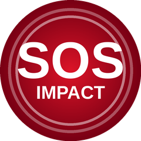

支持
入门
- 创建您的 Telegram 机器人。在 Telegram 中打开
@BotFather，输入/newbot并按步骤操作。它会给您一个 令牌，格式如下：123456789:AAH…。 - 给机器人发消息。打开您的机器人并发送
/start。每一位要接收警报的人都必须对您的机器人执行同样的操作。 - 设置应用。在手机的 Zepp 应用中打开 SOS Impact 的设置：勾选隐私政策复选框，粘贴令牌，然后点击检测聊天 ID。接着点击发送测试警报。
- 填写您的姓名，如有需要，也可填写医疗信息（过敏、用药……）。这些内容会包含在警报中。
- 在手表上打开应用。屏幕上应显示“监测中”。请保持应用打开、屏幕常亮。
解锁应用（付款）
- 7 天试用结束后，应用会被锁定，手表上会显示购买按钮。
- 点击它（手机需要打开 Zepp 应用并开启蓝牙）：手表上会出现一个付款代码。
- 在 www.kzl.io/code 输入该代码，并通过 KiezelPay 完成一次性付款 2.99 欧元 + 税。几秒钟内手表会自动解锁。
- 已经付过款，但手表又要求您付款（例如重置之后）？请访问 www.kzl.io/unlock。
常见问题
屏幕熄灭或在后台时能工作吗？
不能。Zepp OS 会在屏幕熄灭几秒后关闭应用，并且不允许在后台读取加速度计。因此 SOS Impact 在监测时会保持屏幕常亮（“常亮”选项，也是推荐选项），这会更耗电。如果您选择让屏幕熄灭，应用在熄屏期间将停止检测，手表唤醒后会重新打开。
它会拨打 112 或发送短信吗？
不会。Zepp OS 不允许应用拨打电话或发送短信。警报通过 Telegram 发送，并附有拨打 112 的提醒（西班牙和欧盟的急救电话；在其他地区请使用当地号码，例如中国 120）。在 Android 上，您还可以使用 ntfy 和 MacroDroid 设置附带位置的自动短信：分步指南。您也可以选择启用通过 Telegram 的语音通话来呼叫联系人（在设置中的“Telegram 通话”）：每位联系人需要向 @CallMeBot_txtbot 发送一次 /start。警报中显示的号码默认为 112（英文版为提醒拨打当地急救电话的通用提示）；您可以在设置中填写您所在国家的号码（“警报中显示的紧急电话”）。
警报会携带哪些健康数据？
如果手表有近期读数（最近 6 小时内），警报会包含心率和血氧（SpO₂）。这些数据仅供参考，本应用不是医疗设备。如果您的手表不测量其中某一项，该行就不会出现。
低电量提醒是什么？
当手表电量低于 15% 时，SOS Impact 会通过 Telegram 向您的联系人发出一次提醒，因为手表关机后无法检测跌倒。充电超过 30% 后会重新启用。您可以在设置中关闭它。
警报到达时没有位置
手表的 GPS 需要在开阔的天空下或靠近窗户才能获得定位。请检查手表的定位已开启，并且应用已获得权限。如果没有定位，警报仍会发出，并显示“位置不可用”。
误触发 / 没有触发
请在设置中更改灵敏度（低、中、高）或配置。设置中有一个诊断部分，列出最近的事件；请把它发给我们，以便我们进行微调。
我换了手机
许可证保存在手表上。Telegram 设置保存在手机上，您可能需要重新填写。
如何不用摔在地上就能测试应用？
在手表上打开 SOS Impact（监测中），然后到手机设置中点击模拟跌倒。手表会显示带振动和声音的倒计时，但不会发送任何警报。要测试真实发送，请使用发送测试警报。
每日签到是什么？
可选功能。在设置中选择一个小时（1-22）。当天从该时间起，手表会询问“您还好吗？”，您有 60 秒时间按下“我没事”。如果您没有回应，就会通知您的联系人。每天只询问一次，且仅在应用处于监测状态并且屏幕常亮时才会询问。
支持哪些语言？
西班牙语、英语、法语、德语、意大利语、葡萄牙语、巴西葡萄牙语、日语和荷兰语。您可以在手机设置中更改（“语言”部分）。
Telegram 通话不响铃或很慢
它使用免费的 CallMeBot 服务，该服务有时会让通话排队或过载。请填写每位联系人的 Telegram @用户名（手机号经常失败），让每位联系人向 @CallMeBot_txtbot 发送 /start，并在 Telegram → 隐私 → 通话中允许“所有人”来电。这是可选的附加功能：Telegram 消息警报才是主要的警报方式。实验性功能：Telegram 可能把这些电话当作垃圾来电拦截，而且 CallMeBot 不再免费回复私信（需要用 Stars 付费），所以可能不会响铃。请不要为修复它而付费：Telegram 消息警报才是可靠的。
可以通过 WhatsApp 接收警报吗？
可以，这是实验性的可选附加功能（设置 → WhatsApp）。它使用免费的非官方 CallMeBot 服务，可能较慢或失败，并且没有“我已看到”按钮和提醒。每位联系人需要启用一次：保存 callmebot.com 上给出的号码，并通过 WhatsApp 向其发送“I allow callmebot to send me messages”；他们会收到一个数字密钥，您按 +34600111222:key 的格式填写。消息包含您的姓名和位置链接，不含医疗数据。Telegram 警报仍是主要的警报方式。
联系方式
请写信至 amazfit.sosimpact@gmail.com，说明您的手表型号，如有可能，请附上设置 → 诊断的截图。